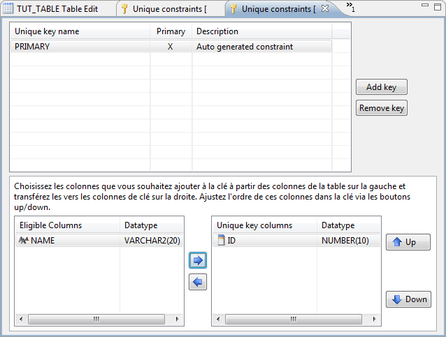

You can create table's unique keys by 5 ways :
From any table by right-clicking and selecting the Create unique key menu item
From a table by selecting it in the version navigator and click the Create unique key icon from the toolbar
From the Unique Keys typed node of a table by right-clicking it and selecting the Create unique key menu item
From within the unique keys editor by clicking the Add key button.
From a diagram by selecting the Create unique key creation tool from the diagram palette and then clicking a table of this diagram
The unique keys editor looks like this :

This editor lists all defined unique / primary keys for a same table.
You can edit the key name by clicking on the unique key name cell from the top table which lists the keys.
You can define the primary key by selecting it from the Primary column of the top table. Note that there can be only 1 primary key per table so tagging a unique key as primary may untag the previous unique key from being primary.
When you first create a new unique key, it will have no columns and all available table columns will appear in the Eligible columns table at the bottom left of the editor. You can define the columns of the unique key by transferring them from the eligible columns table (bottom left) to the Unique key columns on the bottom right through the horizontal blue arrows.
You can reorder the columns within the unique key by clicking the vertical blue arrows.